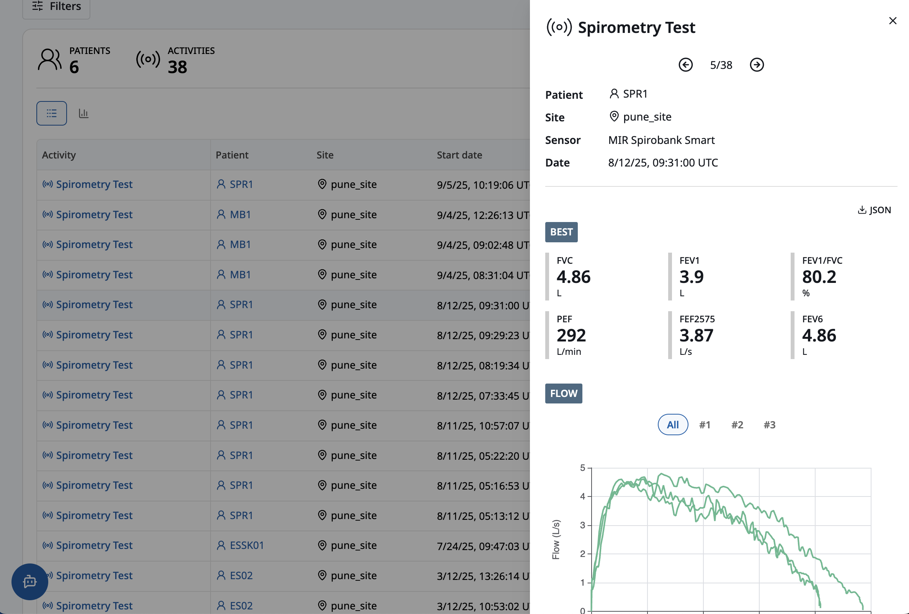
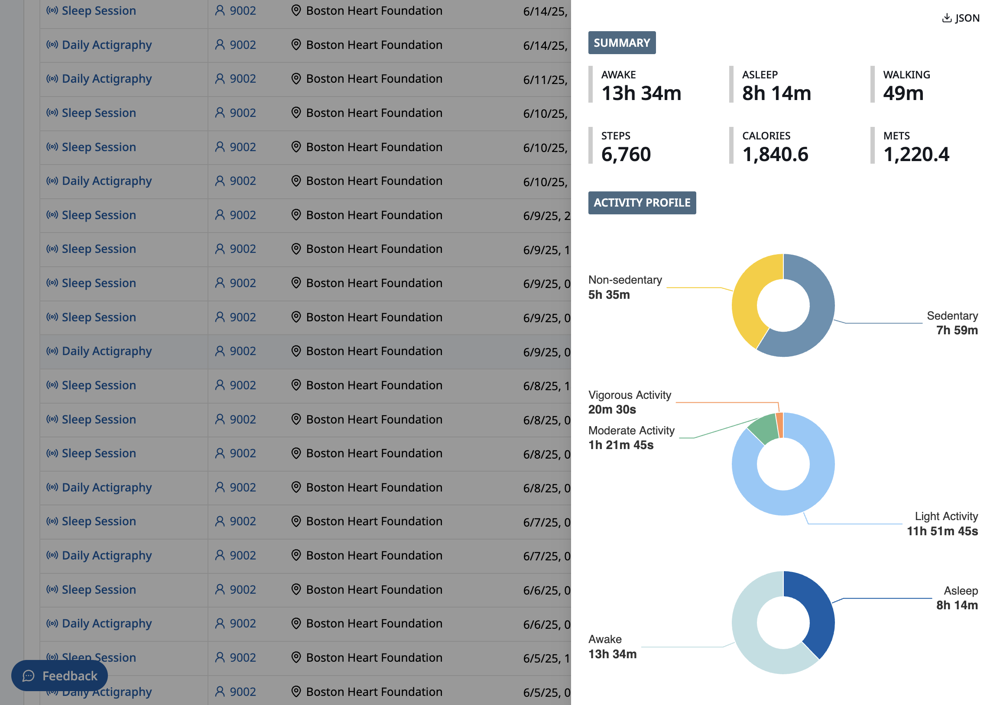
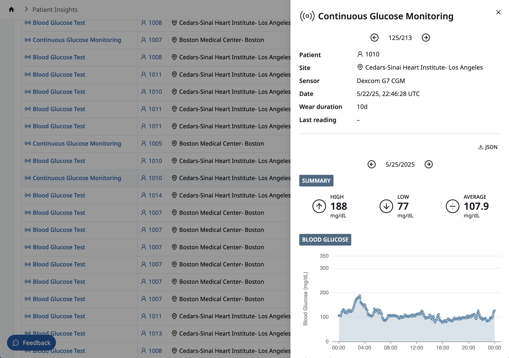

Visualizing data from many different kinds of sensors
Background
Since 2023, I've been developing analytical tools for a clinical trial management system using TypeScript and React.
Problem
Our platform ingested data from many different kinds of biometric sensors. Some of these sensors worked episodically and collected small bits of data, while others worked continuously and produced long streams of data. We needed a predictable, repeatable way to show any kind of sensor data as it was collected, even in studies that used many different types of sensors at the same time.
Solution
I developed a UI pattern that allowed customers to easily navigate, drill into and visualize any type of sensor activity, including:
- Point measurements (e.g. blood pressure readings, blood oxygen tests)
- Long-running processes (e.g. glucose monitoring sessions)
- Test suites (e.g. spirometry tests)
Although no two sensor activities looked alike, they shared a few things in common: the start time of the activity, the patient who performed the activity, and the site that supervised it. With this metadata alone, a customer could call up all spirometry tests by Patient 1 at Site A conducted in the last month, or view all glucose monitoring sessions for all patients at Site B conducted this year.
Actual sensor data, and the accompanying data visualizations, varied from one type of activity to the next. For example, a spirometry test, typically conducted over the course of several minutes, included air flow/volume curves and related statistics:

An actigraphy session displayed a breakdown of a patient's activity levels and energy expenditure over a 24-hour period:

A continuous glucose monitoring session showed blood glucose levels sampled at 5-minute intervals over a ten-day period:

The code
Every sensor activity, whether a simple, episodic measurement or a long-running, continuous recording session, is comprised of observations:
Observations contain all the data necessary to build a visualization:
When the UI loads details of a specific activity, it maps the activity to a custom React component and passes the activity's observations into the component:
Conclusion
Creating a UI for navigating and visualizing any type of sensor activity started with identifying the common attributes of all activities—the type of activity, when it occurred, and who performed it—and using these values as an index into the sensor data itself. And by encoding sensor data in a generic way—as observations—it was simple to customize the UI for each type of activity.